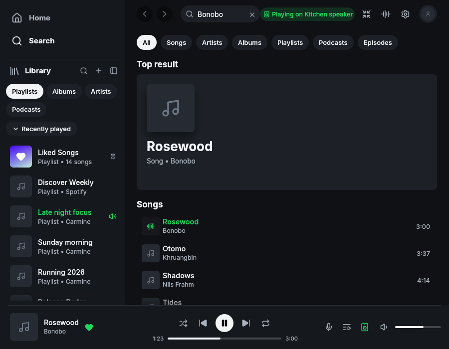

Top-result artist navigation
The resting layout is unchanged. After this change, the artist name in a song Top result underlines on hover and opens that artist's page when selected.

The resting layout is unchanged. After this change, the artist name in a song Top result underlines on hover and opens that artist's page when selected.
